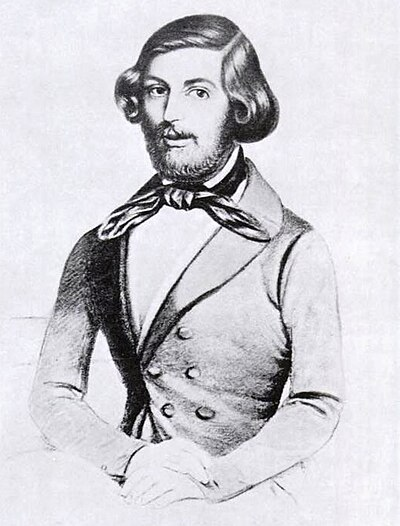

1823–1852
German
Number theory, algebra
Ferdinand Gotthold Max Eisenstein was born in Berlin into difficult circumstances — poverty, chronic illness, and the early deaths of his siblings marked his childhood. He showed extraordinary mathematical precocity and entered the University of Berlin at eighteen, where he came to the attention of Gauss, who rated Eisenstein's talent alongside that of Newton and Archimedes.
In just a few years of frenetic activity, Eisenstein produced deep results in number theory and algebra. His irreducibility criterion, published in 1850, provides a strikingly simple sufficient condition for a polynomial over $\mathbb{Q}$ to be irreducible: if a prime $p$ divides all coefficients except the leading one, and $p^2$ does not divide the constant term, then the polynomial cannot be factored. The criterion remains one of the most practical tools in algebra.
Eisenstein also made fundamental contributions to the theory of elliptic functions and higher reciprocity laws. He gave multiple proofs of quadratic reciprocity and was working toward cubic and quartic reciprocity when tuberculosis cut his life short at twenty-nine. Gauss mourned him deeply. Had Eisenstein lived longer, the landscape of 19th-century number theory might look quite different. As it stands, his irreducibility criterion alone secured his place in every algebra textbook, and his Eisenstein series became a cornerstone of the theory of modular forms — a development he did not live to see.
| Phase | Page | Referenced for |
|---|---|---|
| Phase 10 | Irreducibility and the FTA | Eisenstein's irreducibility criterion (1850) |
| Phase 10 | Irreducibility and the FTA | Died of tuberculosis at 29 |
| Phase 10 | Irreducibility and the FTA | Limitations of the criterion: not all irreducible polynomials detected |
| Phase 10 | Galois Theory | Eisenstein's criterion applied to show irreducibility |